UI/UX Mobile Design · Side Project
22C BankA bank for the generation raised on technology
- Year
- 2022
- Timeline
- 4 months
- Role
- UX/UI Branding
- Project type
- FinTech, Banking Product, B2C
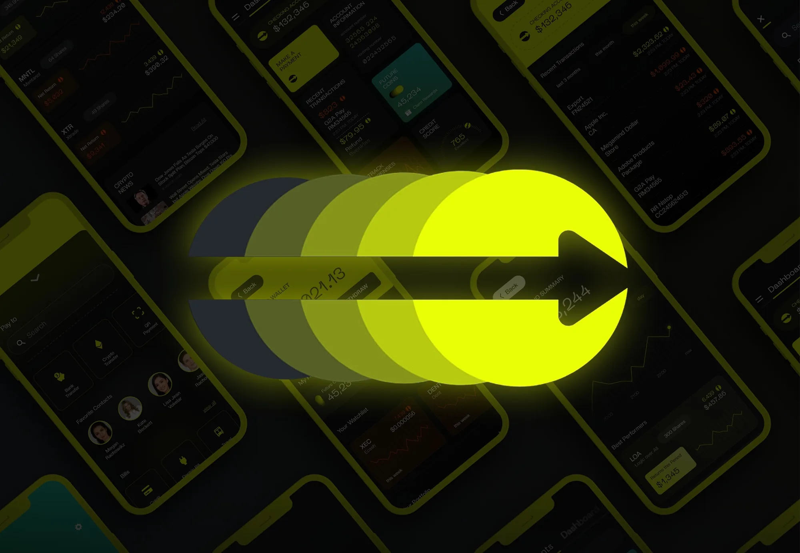
22C is a Bank that exists in a not so distant Future that provides state of the art banking services to the newer generation of young blood — the people filled with passion & understanding of technology.
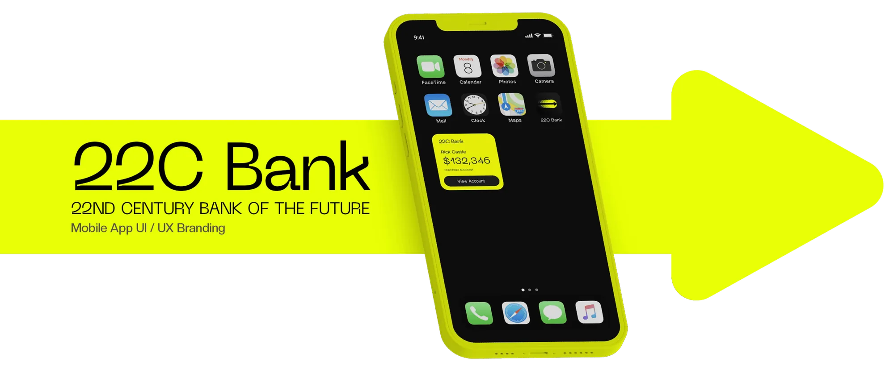
The Brand — Colours
The Soul of the Visual Identity lies with the very Frantic Colour Palette that exuberates an essence of young blood & fast unadulterated passion & change.
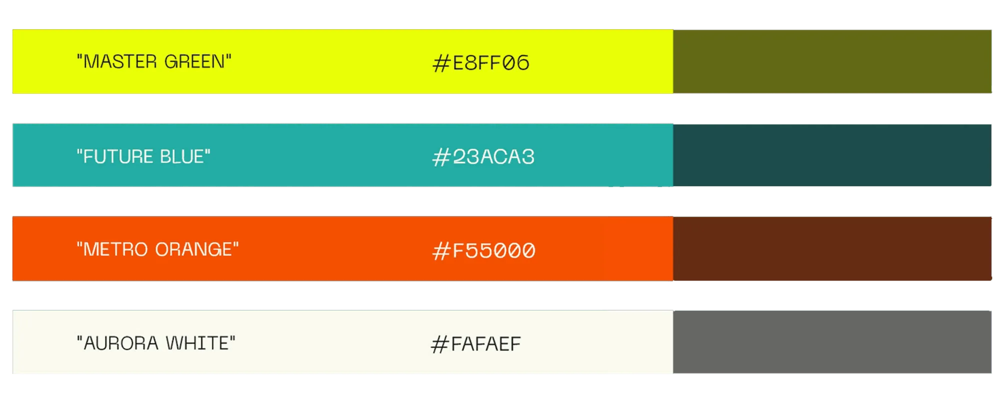
What it is
The Logo makes an unfiltered approach to diverge your attention on the symbol of movement that consistently glides over the different phases of time that get ever more vibrant, but still are under-shadowed by the forward moving arrow that is ephemeral.
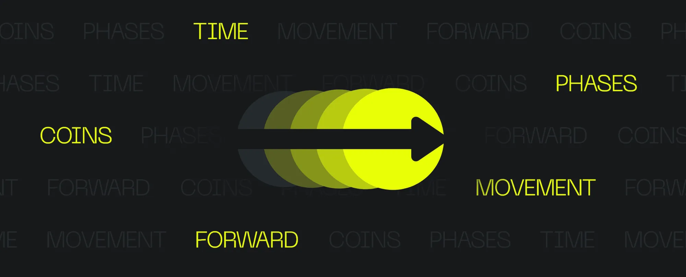
What it means
This strikes the resonance in the eye of the viewer that the unwavering momentum of Time, & the change it brings is frankly, unmatchable by attempts of mere humans, & our sole purpose is to constantly fall behind it at every phase of our lives in attempts to catch up to It.
Typography
The Type Face could be considered the Key to unlock & read between the lines of what 22C truly means for its users. The Modern, Clean, Sophisticated characteristics are taken to extremes with the Typography, & the Pattern of 'Tell, don't Show' is consistent throughout the whole Brand, where the right words are used instead of Illustrations & Iconography to communicate key points.
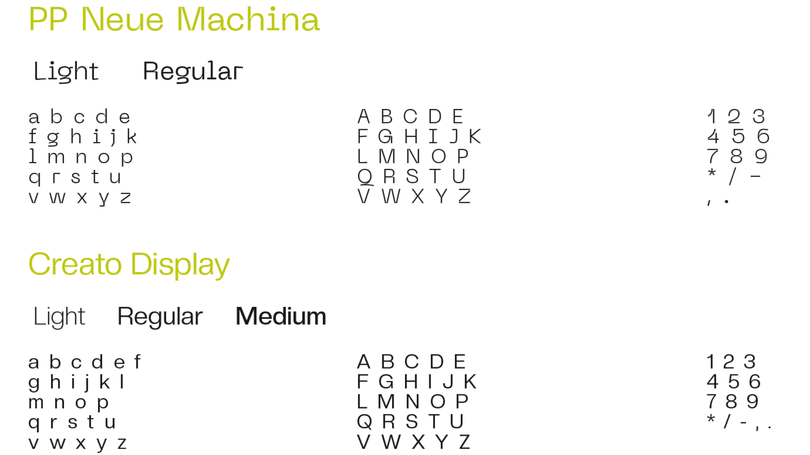
The product
The product
The App is built with a theory & an assumption about the Users. That Assumption is that in the not-so-distant Future, where the Generation has been raised in the presence of Digital Products & Technology, their ability to adapt & accept new Ideas, Structures, & Flow of Information is increased multifold, as compared to the Generation of Today. This allows for more creative approaches to both UX & UI, that can still be functional & beautiful without confining to the same old ancient Layouts & User Flows.
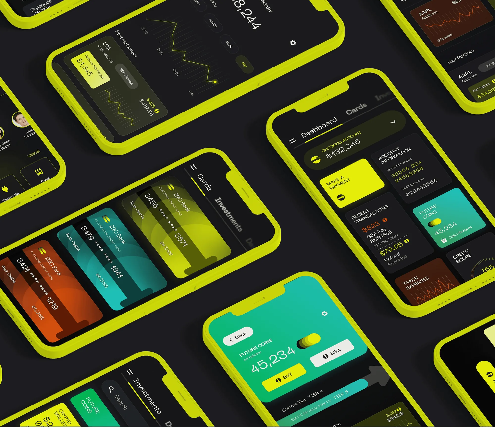
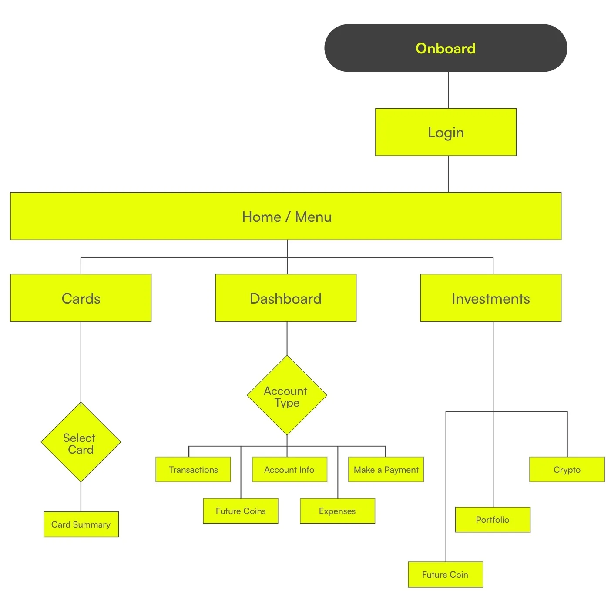
Wireframes
Built with the ideation of Action Tiles & the Infinite Scrolling navigation menu. Even at the molecular level, the vision of 22C is clear.
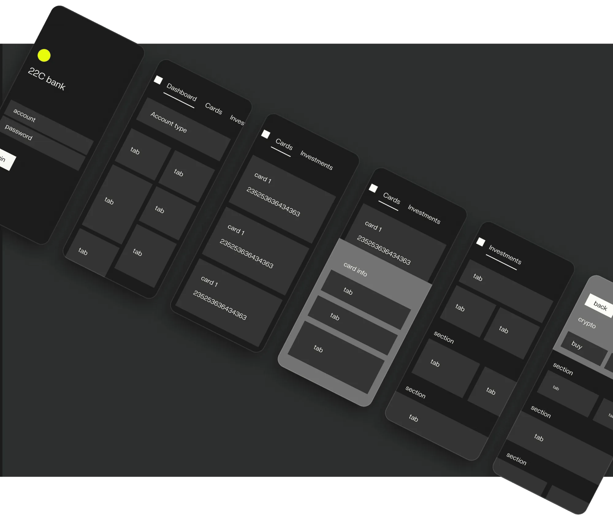
Design
With the weaponized color palette, a brand vision that leaps towards a monument that is actively seeking us, Layouts & Flows that contrive to present you access in a fashion that you frankly deserved a Century ago, this User Experience has its sights on being an absolute delight to use.
Designed to be the Hub for all Information. Every End User Flow can begin from here. One Tap Access to most used Functions & Information, that learn & adapt to the User's activities over Time. Action Tiles that provide deep interaction & detail.
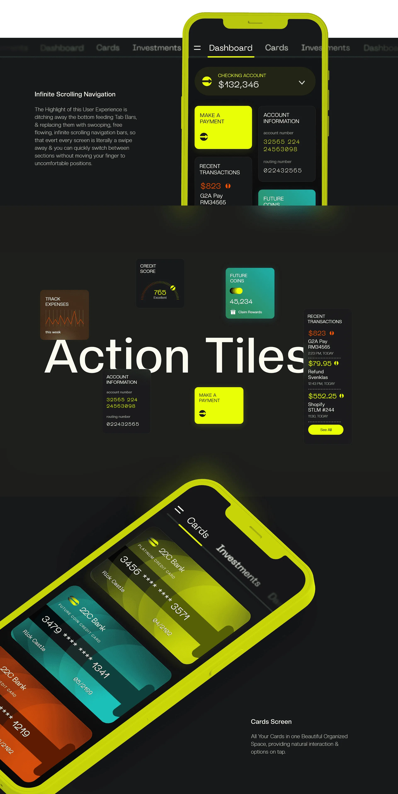
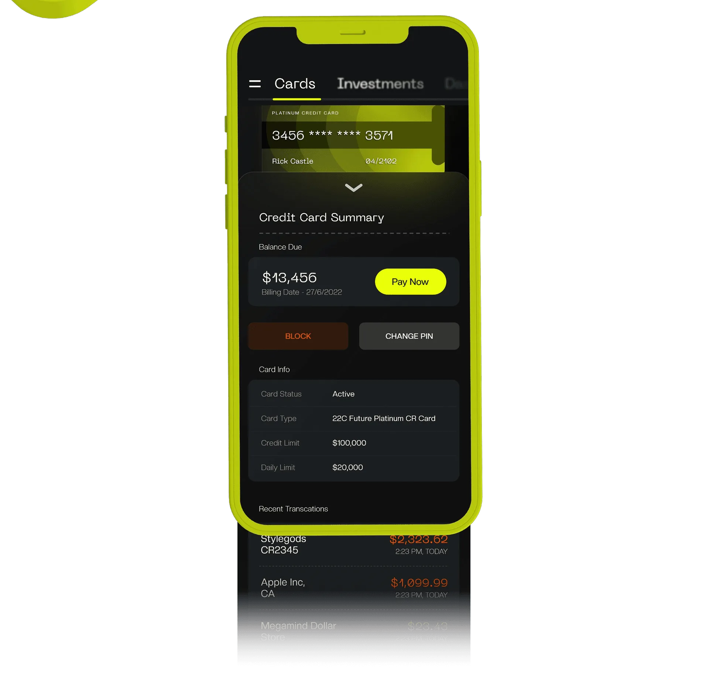
Investments screen
Greeted with a Search bar to access the exact investment the user is interested in. Action Tiles provide insight & interaction for the features you might need most.
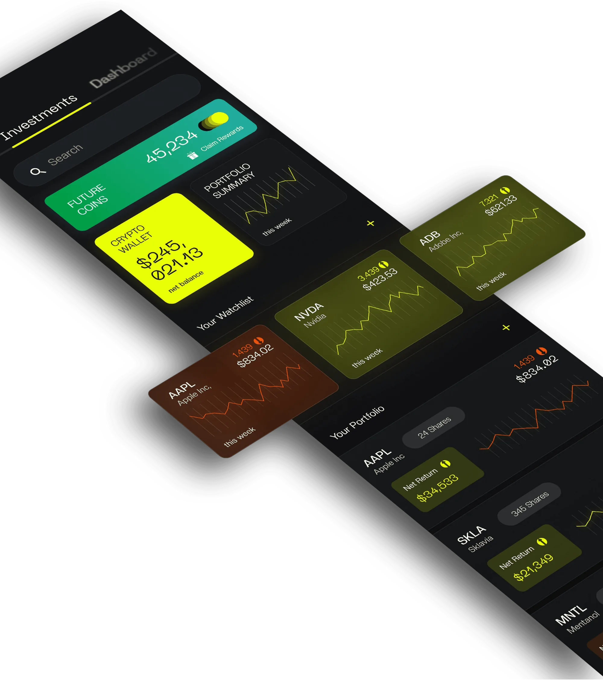
Colors that speak
Your Watchlist & Portfolio provide important insight into the performance of your assets, & color coded elements reveal the nature of the performance at a glance.
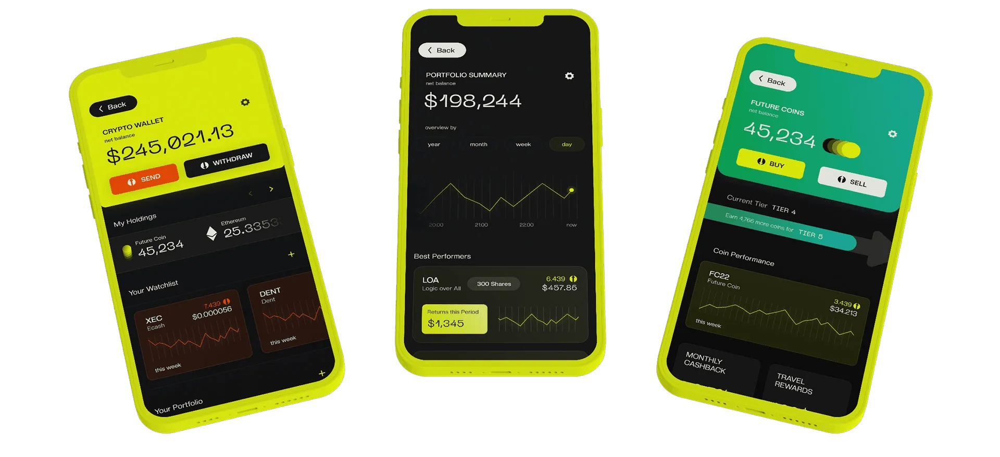
Make a payment
Fast, Comprehensible Arrangement of Steps that feel digestible to new & returning users. Smart Recipient Sheet adapts to the user's behaviours & makes arrangements accordingly.
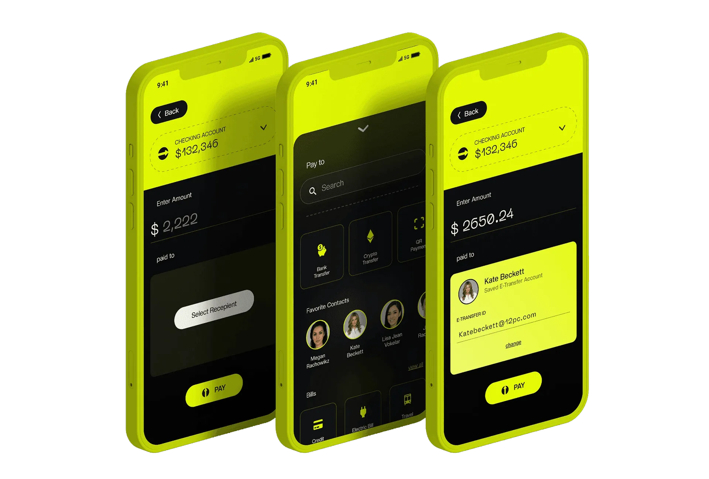
Next prøject
BG Wallet →